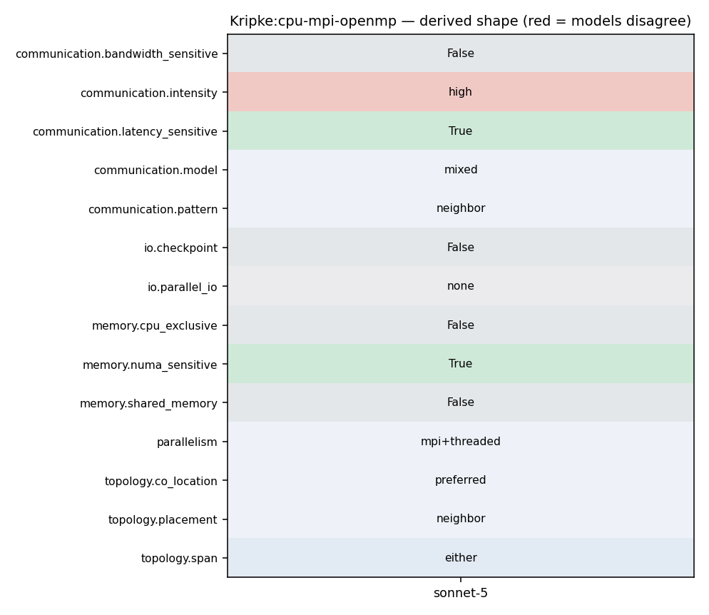

mpirun -np <N> ./kripke.exe --procs px,py,pz --arch OpenMP [--zones x,y,z --groups G ...]
23 24 Parallel sweep algorithms can be explored with Kripke in multiple ways. The core MPI algorithm could be modified or rewritten to explore other approaches, domain overloading, or alternate programming models (such as Charm++). The effect of load-imbalance is an understudied aspect of Sn transport sweeps, and could easily be studied with Kripke by artificially adding more work (i.e. unknowns) to a subset of MPI tasks. Block-AMR could be added to Kripke, which would be a useful way to explore the cost-benefit analysis of adding AMR to an Sn code, and would be a way to further study load imbalances and AMR effects on sweeps. 25 26 The coupling of the on-node sweep kernel, the parallel sweep algorithm, and the choices of decomposing the problem phase space into GS's, ZS's and DS's impact the performance of the overall sweep. The trade off between large and small "units of work" can be studied. Larger "units of work" provide more opportunity for on-node parallelism, while creating larger messages, less "sends", and less efficient parallel sweeps. Smaller "units of work" make for less efficient on-node kernels, but more efficient parallel sweeps. 27 28 We can also study trading MPI tasks for threads, and the effects this has on our programming models and cache efficiency. 29
5 6 Kripke supports storage of angular fluxes (Psi) using all six striding orders (or "nestings") of Directions (D), Groups (G), and Zones (Z), and provides computational kernels specifically written for each of these nestings. Most Sn transport codes are designed around one of these nestings, which is an inflexibility that leads to software engineering compromises when porting to new architectures and programming paradigms. 7 8 Early research has found that the problem dimensions (zones, groups, directions, scattering order) and the scaling (number of threads and MPI tasks), can make a profound difference in the performance of each of these nestings. To our knowledge, this is a capability unique to Kripke, and should provide key insight into how data-layout affects Sn solver performance. An asynchronous MPI-based parallel sweep algorithm is provided, which employs the concepts of Group Sets (GS), Zone Sets (ZS), and Direction Sets (DS), borrowed from the [Texas A&M code PDT](https://parasol.tamu.edu/asci/). 9 10 As we explore new architectures and programming paradigms with Kripke, we will be able to incorporate these findings and ideas into our larger codes. The main advantages of using Kripke for this exploration is that it's light-weight (i.e. easily refactored and modified), and it gets us closer to the real question we want answered: "What is the best way to layout and traverse data in parallel in an Sn code on a given architecture+programming-model?" instead of the more commonly asked question "What is the best way to map my existing Sn code to a given architecture+programming-model?". 11
21 -------- 22 A major challenge of achieving high-performance in an Sn transport (or any physics) code is choosing a data-layout and a parallel decomposition that lends itself to the targeted architecture. Often the data-layout determines the most efficient nesting of loops in computational kernels, which then determines how well your inner-most-loop SIMD vectorizes, how you add threading (pthreads, OpenMP, etc.), and the efficiency and design of your parallel algorithms. Therefore, each nesting produces a different loop nesting orders with substantially different performance characteristics. We want to explore how easily and efficiently these different nestings map to different architectures. In particular, we are interested in exploring how we can achieve good parallel efficiency while also achieving efficient use of node resources (such as SIMD units, memory systems, and accelerators). 23 24 Parallel sweep algorithms can be explored with Kripke in multiple ways. The core MPI algorithm could be modified or rewritten to explore other approaches, domain overloading, or alternate programming models (such as Charm++). The effect of load-imbalance is an understudied aspect of Sn transport sweeps, and could easily be studied with Kripke by artificially adding more work (i.e. unknowns) to a subset of MPI tasks. Block-AMR could be added to Kripke, which would be a useful way to explore the cost-benefit analysis of adding AMR to an Sn code, and would be a way to further study load imbalances and AMR effects on sweeps. 25 26 The coupling of the on-node sweep kernel, the parallel sweep algorithm, and the choices of decomposing the problem phase space into GS's, ZS's and DS's impact the performance of the overall sweep. The trade off between large and small "units of work" can be studied. Larger "units of work" provide more opportunity for on-node parallelism, while creating larger messages, less "sends", and less efficient parallel sweeps. Smaller "units of work" make for less efficient on-node kernels, but more efficient parallel sweeps. 27
23 24 Parallel sweep algorithms can be explored with Kripke in multiple ways. The core MPI algorithm could be modified or rewritten to explore other approaches, domain overloading, or alternate programming models (such as Charm++). The effect of load-imbalance is an understudied aspect of Sn transport sweeps, and could easily be studied with Kripke by artificially adding more work (i.e. unknowns) to a subset of MPI tasks. Block-AMR could be added to Kripke, which would be a useful way to explore the cost-benefit analysis of adding AMR to an Sn code, and would be a way to further study load imbalances and AMR effects on sweeps. 25 26 The coupling of the on-node sweep kernel, the parallel sweep algorithm, and the choices of decomposing the problem phase space into GS's, ZS's and DS's impact the performance of the overall sweep. The trade off between large and small "units of work" can be studied. Larger "units of work" provide more opportunity for on-node parallelism, while creating larger messages, less "sends", and less efficient parallel sweeps. Smaller "units of work" make for less efficient on-node kernels, but more efficient parallel sweeps. 27 28 We can also study trading MPI tasks for threads, and the effects this has on our programming models and cache efficiency. 29
171 GlobalSdomId global_sdom_id = local_to_global(sdom_id); 172 173 // Post the recieve 174 MPI_Irecv(plane_data_ptr, plane_data_size, MPI_DOUBLE, upwind_rank, 175 *global_sdom_id, MPI_COMM_WORLD, &recv_requests[recv_requests.size()-1]); 176 177 // increment number of dependencies
247 } 248 249 // Post the send 250 MPI_Isend(src_buffer, plane_data_size, MPI_DOUBLE, downwind_rank, 251 *downwind_sdom, MPI_COMM_WORLD, &send_requests[send_requests.size()-1]); 252 253 #else
171 GlobalSdomId global_sdom_id = local_to_global(sdom_id); 172 173 // Post the recieve 174 MPI_Irecv(plane_data_ptr, plane_data_size, MPI_DOUBLE, upwind_rank, 175 *global_sdom_id, MPI_COMM_WORLD, &recv_requests[recv_requests.size()-1]); 176 177 // increment number of dependencies
247 } 248 249 // Post the send 250 MPI_Isend(src_buffer, plane_data_size, MPI_DOUBLE, downwind_rank, 251 *downwind_sdom, MPI_COMM_WORLD, &send_requests[send_requests.size()-1]); 252 253 #else
121 RAJA_INLINE 122 long allReduceSumLong(long value) const { 123 #ifdef KRIPKE_USE_MPI 124 MPI_Allreduce(MPI_IN_PLACE, &value, 1, MPI_LONG, MPI_SUM, m_comm); 125 #endif 126 return value; 127 }
32 Adds a subdomain to the work queue. 33 Determines if upwind dependencies require communication, and posts appropirate Irecv's. 34 */ 35 void SweepComm::addSubdomain(Kripke::Core::DataStore &data_store, SdomId sdom_id){ 36 // Post recieves for upwind dependencies, and add to the queue 37 postRecvs(data_store, sdom_id); 38 }
171 GlobalSdomId global_sdom_id = local_to_global(sdom_id); 172 173 // Post the recieve 174 MPI_Irecv(plane_data_ptr, plane_data_size, MPI_DOUBLE, upwind_rank, 175 *global_sdom_id, MPI_COMM_WORLD, &recv_requests[recv_requests.size()-1]); 176 177 // increment number of dependencies
247 } 248 249 // Post the send 250 MPI_Isend(src_buffer, plane_data_size, MPI_DOUBLE, downwind_rank, 251 *downwind_sdom, MPI_COMM_WORLD, &send_requests[send_requests.size()-1]); 252 253 #else
33 Physical Models 34 --------------- 35 36 Kripke solves the Discrete Ordinance and Diamond Difference discretized steady-state linear Boltzmann equation. 37 38 H * Psi = (LPlus * S * L) * Psi + Q 39
52 * **Q** is an external source. In Kripke it is represented in moment space, so really "LPlus*Q" 53 54 55 Kripke is hard-coded to setup and solve the [3D Kobayashi radiation benchmark, problem 3i](https://www.oecd-nea.org/science/docs/2000/nsc-doc2000-4.pdf). Since Kripke does not have reflecting boundary conditions, the full-space model is solved. Command line arguments allow the user to modify the total and scattering cross-sections. Since Kripke is a multi-group transport code and the Kobayashi problem is single-group, each energy group is setup to solve the same problem with no group-to-group coupling in the data. 56 57 58 The steady-state solution method uses the source-iteration technique, where each iteration is as follows:
1 // 2 // Copyright (c) 2014-25, Lawrence Livermore National Security, LLC 3 // and Kripke project contributors. See the Kripke/COPYRIGHT file for details. 4 //
175 Environment Variables 176 -------------------- 177 178 If Kripke is built with OpenMP support, then the environment variable ``OMP_NUM_THREADS`` is used to control the number of OpenMP threads. Kripke does not attempt to modify the OpenMP runtime in any way, so other ``OMP_*`` environment variables should also work as well. 179 180 If Kripke is built with Caliper support, Caliper performance measurements can be configured through Caliper environment variables. For example, 181
25 26 The coupling of the on-node sweep kernel, the parallel sweep algorithm, and the choices of decomposing the problem phase space into GS's, ZS's and DS's impact the performance of the overall sweep. The trade off between large and small "units of work" can be studied. Larger "units of work" provide more opportunity for on-node parallelism, while creating larger messages, less "sends", and less efficient parallel sweeps. Smaller "units of work" make for less efficient on-node kernels, but more efficient parallel sweeps. 27 28 We can also study trading MPI tasks for threads, and the effects this has on our programming models and cache efficiency. 29 30 A simple timer infrastructure is provided that measure each compute kernels total time. 31
175 Environment Variables 176 -------------------- 177 178 If Kripke is built with OpenMP support, then the environment variable ``OMP_NUM_THREADS`` is used to control the number of OpenMP threads. Kripke does not attempt to modify the OpenMP runtime in any way, so other ``OMP_*`` environment variables should also work as well. 179 180 If Kripke is built with Caliper support, Caliper performance measurements can be configured through Caliper environment variables. For example, 181
308 endif() 309 310 if(ENABLE_MPI_WRAPPER) 311 set(KRIPKE_USE_MPI 1) 312 endif() 313 314 if(ENABLE_GPU_AWARE_MPI)
79 80 * C++14 Compiler (g++, icpc, etc.) 81 82 * (Optional) MPI 1.0 or later 83 84 * (Optional) OpenMP 3 or later 85
81 82 * (Optional) MPI 1.0 or later 83 84 * (Optional) OpenMP 3 or later 85 86 * (Optional) [Caliper](https://github.com/LLNL/Caliper): a performance profiling/analysis library. 87
175 Environment Variables 176 -------------------- 177 178 If Kripke is built with OpenMP support, then the environment variable ``OMP_NUM_THREADS`` is used to control the number of OpenMP threads. Kripke does not attempt to modify the OpenMP runtime in any way, so other ``OMP_*`` environment variables should also work as well. 179 180 If Kripke is built with Caliper support, Caliper performance measurements can be configured through Caliper environment variables. For example, 181
75 # Default Arch and Layout selection 76 # Sequential by default, but will be overriden if OpenMP or CUDA are enabled 77 # 78 set(KRIPKE_ARCH "Sequential") 79 set(KRIPKE_LAYOUT DGZ) 80 81
171 GlobalSdomId global_sdom_id = local_to_global(sdom_id); 172 173 // Post the recieve 174 MPI_Irecv(plane_data_ptr, plane_data_size, MPI_DOUBLE, upwind_rank, 175 *global_sdom_id, MPI_COMM_WORLD, &recv_requests[recv_requests.size()-1]); 176 177 // increment number of dependencies
171 GlobalSdomId global_sdom_id = local_to_global(sdom_id); 172 173 // Post the recieve 174 MPI_Irecv(plane_data_ptr, plane_data_size, MPI_DOUBLE, upwind_rank, 175 *global_sdom_id, MPI_COMM_WORLD, &recv_requests[recv_requests.size()-1]); 176 177 // increment number of dependencies
247 } 248 249 // Post the send 250 MPI_Isend(src_buffer, plane_data_size, MPI_DOUBLE, downwind_rank, 251 *downwind_sdom, MPI_COMM_WORLD, &send_requests[send_requests.size()-1]); 252 253 #else
237 238 Layout of spatial subdomains over MPI ranks. 0 for "Blocked" where local zone sets represent adjacent regions of space. 1 for "Scattered" where adjacent regions of space are distributed to adjacent MPI ranks. (Default: --layout 0) 239 240 * **``--procs <npx,npy,npz>``** 241 242 Number of MPI ranks in each spatial dimension. (Default: --procs 1,1,1) 243
239 240 * **``--procs <npx,npy,npz>``** 241 242 Number of MPI ranks in each spatial dimension. (Default: --procs 1,1,1) 243 244 * **``--dset <ds>``** 245